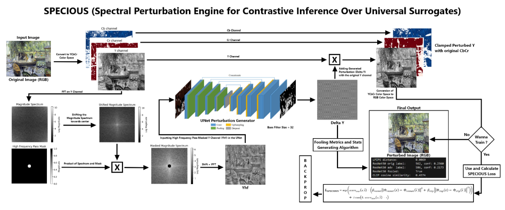
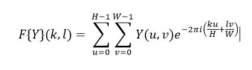
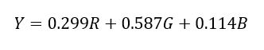
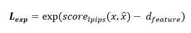
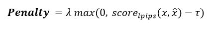

SPECIOUS — Spectral Perturbation Engine for Contrastive Inference Over Universal Surrogates
[Github] [Working Demo]
Abstract
Generative AI models trained on large uncurated image corpora often appropriate artists’ copyrighted work without consent. We introduce SPECIOUS (Spectral Perturbation Engine for Contrastive Inference Over Universal Surrogates), a universal, multi-model defensive technique that embeds imperceptible high-frequency perturbations into the luminance (Y) channel of YCbCr representations. At inference time, these perturbations remain invisible to humans but systematically degrade feature embeddings across multiple surrogate models (ResNet-50, CLIP ViT-B/32, etc.), preventing downstream generative or classification tasks from reproducing the protected style. Our U-Net-based generator works in the Fourier domain, with a learnable high-pass mask, while our novel SpeciousLoss simultaneously minimizes LPIPS perceptual distance and maximizes the surrogate model’s feature distortion under a strict perceptual threshold. We demonstrate that S.P.E.C.I.O.U.S. effectively fools zero-shot predictions and classifications, generalizes across resolutions, and preserves visual fidelity.
- Introduction
- Literature Survey
- Materials and Proposed Methodology
- Experiments & Results
- Conclusion
- References
- Annexure
Chapter 1 — Introduction
Background and Problem Statement
The recent “Ghiblification” phenomenon, more like a social media trend—in which users transform images into a Studio Ghibli style via ChatGPT’s image model [1][2][3]—has reignited urgent debates about copyright and artist rights in AI-generated art. Studio Ghibli itself has weighed legal action against OpenAI [4], but trademark and copyright statutes offer only partial recourse because “visual style” per se often falls outside traditional infringement claims. Meanwhile, AI companies continue to scrape public and private image repositories—often including copyrighted works—without artists’ consent [5][6], allowing models like DALL·E 2, Midjourney, Stable Diffusion, etc, to reproduce distinctive styles in seconds. Authors and illustrators worldwide report moral injury, as their life’s work is co-opted without credit or compensation [7].
Adversarial perturbations offer a pathway for self-defence [8]: small, model-imperceptible modifications that disrupt downstream inference. Empirical studies demonstrate that such perturbations concentrate in high-frequency components (sharp edges and textures)—that deep networks exploit to build feature representations [9][10], while leaving low-frequency content (soft edges and textures) intact. Furthermore, perturbations applied in the YCbCr color space show that changes in chrominance (Cb, Cr) are less salient to humans, but the most effective adversarial distortions actually arise in the luminance (Y) channel [11].
Limitations of Existing Defences
Although tools like Glaze and Nightshade represent important steps toward protecting artists, they exhibit several key shortcomings that hinder their broader applicability:
- Model-Specific Targeting: Both Glaze and Nightshade focus narrowly on Stable Diffusion–style pipelines rather than offering a general defence. Glaze’s perturbations are designed specifically to mislead diffusion-based generators (e.g., Stable Diffusion or Midjourney) and may not transfer to other architectures or tasks [12][13]. Nightshade likewise tailors its poisoning attack to prompt-specific vulnerabilities in text-to-image diffusion models, requiring intimate knowledge of a single target model’s training data and concept sparsity [14]. In contrast, SPECIOUS can incorporate any number of surrogate models—from ResNet-50 classifiers to CLIP encoders—via its dynamic loss function, making it universal across architectures [15].
- Dependence on a Target Label: Nightshade’s prompt-specific poisoning hinges on choosing exactly which concept or class to corrupt [16]. You must supply a target label that directs the model’s latent representation into an unwanted state. Glaze similarly bakes in perturbations aimed at derailing the model’s style mimicry for a predefined artist. SPECIOUS, however, functions as a label-agnostic perturbation engine [17]: it crafts universal changes that degrade feature embeddings broadly, without needing to specify any particular downstream label or prompt.
- Single-Metric Penalty: Both prior defences apply only an LPIPS penalty [18] to control perceptual visibility, so they minimize human-noticeable changes but do not actively push feature representations apart. SPECIOUS’s SpeciousLoss, by contrast, is a bi-objective function: it simultaneously minimizes LPIPS and maximizes distortion in multiple surrogate feature spaces. This balanced approach guarantees both stealth and efficacy, rather than sacrificing one for the other.
- Neglect of Y-Channel Perturbations: Glaze and Nightshade operate solely in the RGB pixel domain [19], dispersing small cloaks uniformly across red, green, and blue channels. Yet perceptual and adversarial research shows that the luminance (Y) channel in YCbCr carries the most potent perturbations—human vision is less sensitive to chrominance, but deep networks leverage brightness variations heavily. SPECIOUS exploits this by concentrating all changes in the Y channel, preserving color fidelity while attacking the model-relevant signal.
- Overlooking Frequency-Domain Structure: Glaze nor Nightshade uses frequency-domain filtering [20], neglecting the fact that adversarial deltas predominantly occupy high-frequency bands—edges and textures—that classification and generative models rely on. SPECIOUS embeds a learnable high-pass mask in the Fourier domain, adaptively isolating precisely those spectral regions where perturbations inflict maximum damage, ensuring minimal perceptual impact.
Taken together, these limitations underscore why a universal, multi-model defence—one that works at inference time, requires no specific label, balances perceptual and feature distortion, targets only the Y channel, and leverages frequency analysis—is essential for protecting creative content in the age of generative AI.
Our Approach: SPECIOUS
We propose SPECIOUS (Spectral Perturbation Engine for Contrastive Inference Over Universal Surrogates), integrating four key innovations:
- Frequency-Domain Perturbation on Y Channel: We transform only the Y channel into the Fourier domain [11][21], apply a learnable high-pass mask to isolate sharp edges and textures, then invert back to the spatial domain. This focuses perturbations on features that both classification (ResNet-50) and zero-shot (CLIP ViT-B/32) models rely on.
- U-Net Generator with FFT/IFFT Blocks: A bespoke U-Net architecture [22] ingests the high-frequency component and outputs a single-channel perturbation, ensuring the capacity to learn complex spatial patterns while maintaining low inference cost.
- Specious Loss: Joint Perceptual and Feature Distortion Objective: To train this, we designed Specious Loss, which balances two goals:
- Perceptual fidelity, by minimizing LPIPS (a learned measure of human-perceived similarity) under a strict threshold.
- Model disruption, by maximizing the difference in feature representations extracted by several pre-trained networks.
- Universal Multi-Model Defence: By training against multiple surrogate models simultaneously, SPECIOUS generates perturbations that generalize across architectures and tasks, unlike prior single-model attacks [15][24].
We demonstrate that SPECIOUS preserves visual fidelity while achieving high fooling rates (>70%) on both classification and zero-shot generative benchmarks.
Chapter 2 — Literature Survey
Style-Cloaking and Dataset-Poisoning Attacks
- Glaze’s Style Cloaks: Glaze crafts tiny RGB perturbations ("style cloaks") that artists can apply before sharing images, so that diffusion models trained on these cloaked versions learn a skewed style representation. In a large-scale user study, Glaze showed strong disruption but its effectiveness depends on models fine-tuned on cloaked data.
- Nightshade’s Prompt-Specific Poisoning: Nightshade takes a data-poisoning route [14] by injecting carefully crafted image–text pairs into the Stable Diffusion training set, such that fewer than 100 poisoned samples can hijack a model’s response to a specific prompt (e.g., making “a cat” generate flowers instead). These poison images are visually indistinguishable from authentic samples and can even “bleed through” to semantically related prompts. Yet because Nightshade requires access to and modification of the training pipeline, it cannot defend images shared against black-box, inference-only attacks.
Frequency-Domain Adversarial Perturbations
Early work revealed that gradient-based adversarial deltas concentrate in high-frequency bands [9][25]—the fine edges and textures that convolutional networks heavily weight. Building on this, researchers have embedded spectral filtering layers inside defences to emphasize low-frequency content for robust recognition, effectively “damping” model sensitivity to perturbations. Other defences apply input transformations in the Fourier domain, such as mixing or removing select frequencies, to neutralize adversarial noise before classification. These techniques underscore the power of frequency analysis, but most target single architectures or rely on fixed, hand-crafted filters rather than learnable, adaptive masks.
Perceptual Metrics in Adversarial Optimization
To achieve “stealthy” attacks, perceptual fidelity is critical. The Learned Perceptual Image Patch Similarity (LPIPS) metric [18] aligns deep feature distances with human judgments, mapping differences onto a 0–1 scale. LPIPS has been used both as an evaluation metric and as a loss term during adversarial example generation, ensuring perturbations remain below human-noticeable thresholds. The Perceptual Sensitive Attack further integrates LPIPS constraints to maximize downstream task disruption under tight perceptual budgets, illustrating how perceptual losses can guide more effective black-box attacks. However, existing methods seldom jointly optimize LPIPS and multi-model feature distortion under a strict threshold.
Y-Channel Specific Attacks
Pestana et al. demonstrated that adversarial perturbations “prevail” in the luminance (Y) channel [11] of YCbCr space, achieving higher fooling rates for the same perturbation budget compared to RGB-space attacks. Their ResUpNet defence uses a Y-channel de-noising network to remove adversarial noise (from FGSM, PGD, DDN) while leaving chrominance untouched, thereby preserving color fidelity. This work highlights how human sensitivity to chrominance changes is lower, making Y-focused perturbations more “efficient”—yet most RGB-based defences ignore this channel specificity.
Universal and Multi-Model Attacks
Most adversarial studies focus on a single architecture. Transfer-based attacks sometimes generalize but lack perceptual guarantees. Very few methods optimize simultaneously against multiple surrogate models under perceptual constraints—this gap motivates SPECIOUS.
Adversarial Patches and Physical-World Attacks
Universal adversarial patches, introduced by Brown et al., can be printed or worn in the real world [22][26] yet still mislead classifiers toward a chosen label, demonstrating that perturbations need not be pixel-budget-limited to be effective. These patches remain robust under varied transformations—lighting, scale, viewpoint—making them a potent threat in safety-critical applications. Thys et al. later extended this idea to object detectors, showing that simple printouts affixed to clothing can hide pedestrians from surveillance systems like YOLOv2, confirming the real-world viability of patch attacks.
Object-Detection Patch Attacks
Liu et al. proposed DPatch, an adversarial patch attack [27] specifically targeting object detectors (Faster R-CNN, YOLO). Unlike earlier work focused on classifiers, DPatch simultaneously disrupts bounding-box regression and class scores, driving mAP on state-of-the-art detectors below 1% in a purely black-box setting. Its location independence and cross-model transferability highlight the vulnerability of modern detection architectures to patch-style attacks.
Certified Robustness and Feature De-Noising
Randomized smoothing offers provable ℓ₂-norm robustness certificates. Feature-denoising networks suppress noise in intermediate feature maps and improve adversarial robustness when combined with adversarial training.
Extending Certification to Transformations
Fischer et al. extended randomized smoothing to cover parameterized image transformations (e.g., rotations, translations) [29], overcoming challenges of interpolation and rounding by introducing individual, distributional, and heuristic certificates for parameterized robustness. Their framework broadens the notion of certification beyond pixel-norm constraints to real-world transformations.
Feature De-Noising Networks
Xie et al. observed that adversarial perturbations cause “noise” in intermediate feature maps [30], not just pixels, and built feature-denoising blocks (non-local means, median filters) into CNNs to suppress this noise. When combined with adversarial training, such networks doubled prior white-box PGD robustness on ImageNet (from ~27.9% to 55.7% accuracy under 10-step PGD) and won the CAAD 2018 defence track.
Chapter 3 — Materials and Proposed Methodology
Let’s begin by summarizing our approach: we trained a U-Net–based generator that operates in the Fourier domain of the Y channel (luminance) to produce high-frequency perturbations that disrupt multiple surrogate encoders (ResNet-50, CLIP ViT-B/32) while minimizing human perceptual distortion and keeping it below a strict LPIPS threshold [11][21][16][15][18]. A learnable high-pass mask focuses the U-Net on edges and textures, and our Specious Loss jointly optimizes perceptual similarity and feature distortion, with an exponential term ensuring positivity and a penalty enforcing imperceptibility [21][23][22].

Data Preparation
- Dataset Used: We construct a balanced, 10,000–image training corpus by combining two diverse sources:
- PASCAL VOC 2017 (5,000 images): We sample 5,000 images at random from the PASCAL VOC 2007/2012 Train + Val splits, which together comprise approximately 11,540 images covering 20 object classes (e.g., person, vehicle, animal, furniture) in real-world scenes [31].
- "Best Artworks of All Time" by ikarus777 on Kaggle (5,000 images): This curated collection contains thousands of masterpieces spanning Baroque, Impressionism, Cubism, Surrealism, and other art movements. We randomly select 5,000 images to cover a spectrum of styles and textures [32].
- Pre-processing steps:
- Resize all images to 224 × 224 via bicubic interpolation to match ResNet50 and CLIP’s Image Encoder input size [33].
- Normalize pixel intensities to the [0, 1] range and convert to tensors of shape 3(C) x 244(H) x 244(W) [34].
- No further augmentations (flips, crops) are applied, so that each epoch sees the same data distribution; we train for 7 epochs over this 10,000-image set [31].
- Rationale:
- The PASCAL VOC split provides complex, real-world scenes that challenge both low- and high-frequency feature extraction [9].
- The art dataset adds stylistic diversity, ensuring our perturbations generalize to both photographic and painterly textures [26].
- Fixed resolution simplifies FFT block design and stabilizes training [21].
Model Architecture
The architecture centers on a U-Net generator augmented with FFT/IFFT blocks for frequency-domain processing of the luminance channel [11][21].
-
U-Net Backbone: We adopt the original U-Net design by Ronneberger et al., featuring a symmetric contracting and expanding path with skip-connections:
-
Contracting Path: The encoder follows a hierarchical feature–extractor design: at each level, two consecutive 3 × 3 convolutions (with stride 1 and zero padding) extract local patterns, followed by a ReLU nonlinearity that introduces sparsity and mitigates vanishing gradients. Stacking two convolutions before pooling increases the effective receptive field, covering 5×5 pixels, while preserving fine-grained details. A 2 × 2 max-pool operation with stride 2 then halves spatial dimensions, enabling the network to aggregate context across larger regions and build progressively higher-level representations.
Skip-connections copy each convolutional feature map before pooling directly into the corresponding decoder block. This U-shaped information flow ensures that spatial information lost during down-sampling is restored during up-sampling, preventing overly coarse reconstructions and aiding gradient propagation.
- Bottleneck: At the network’s deepest point, feature maps reach their smallest spatial resolution (e.g., 14×14 for 224×224 input with four poolings). Here, two more 3 × 3 Conv–ReLU layers operate on the richest semantic features, maximizing the global receptive field—up to ~188×188 pixels—so that each output neuron “sees” nearly the entire input image. This global context is critical for generating perturbations that can mislead classifiers based on both local texture and broader composition.
- Expanding Path: The decoder mirrors the encoder: at each level, a 2 × 2 transposed convolution (a learnable up-sampling) doubles spatial dimensions, reconstructing finer resolution. The up-sampled feature map is concatenated with its encoder counterpart (from skip connection), fusing high-level semantics with low-level details. Two 3 × 3 Conv–ReLU layers then refine this merged representation. This symmetric expansion gradually recovers the original image size, culminating in a final 1 × 1 convolution that projects to a single‐channel perturbation ΔY, with Tanh bounding values in [–1,1].
- Output: A final 1 × 1 convolution maps to a single‐channel perturbation ΔY, followed by Tanh to constrain values to [–1, 1].
This design excels at preserving fine details via skip-connections while providing large receptive fields for context.
-
Contracting Path: The encoder follows a hierarchical feature–extractor design: at each level, two consecutive 3 × 3 convolutions (with stride 1 and zero padding) extract local patterns, followed by a ReLU nonlinearity that introduces sparsity and mitigates vanishing gradients. Stacking two convolutions before pooling increases the effective receptive field, covering 5×5 pixels, while preserving fine-grained details. A 2 × 2 max-pool operation with stride 2 then halves spatial dimensions, enabling the network to aggregate context across larger regions and build progressively higher-level representations.
-
Capacity and Base Filters
- Base Filters: We set an initial width of 32 channels at the first Conv layer, doubling at each down‐sampling (32 → 64 → 128 → 256 → 512). This yields ~5 M parameters—suitable for 8 GB GPUs at 224 × 224 resolution.
- Scalability: For larger datasets or higher resolutions, base filters can be increased to 64 or 128, quadratically increasing capacity and model size. Hardware allowing, this enhances the network’s expressivity at the cost of memory and compute.
Frequency-Domain Perturbation Block
In contrast to spatial-domain attacks, our method explicitly operates in the frequency domain, leveraging classical Fourier analysis to target the edge and texture information that neural networks exploit.
-
Fundamentals of Image Fourier Decomposition: Every grayscale image Y (u, v) can be expressed as a sum of two-dimensional sinusoids via the 2D Discrete Fourier Transform (DFT) [35]:

Here, low indices (k, l) correspond to low frequencies (smooth variations), whereas high indices represent high frequencies (rapid changes, edges). Physically, this decomposition separates colour intensities into global luminance patterns versus fine-scale textures.
- Why High Frequencies Matter for Adversarial Attacks: Recent analyses show that modern CNNs exhibit a texture bias, relying heavily on high-frequency information for classification and recognition. Furthermore, adversarial perturbations introduced via gradient-based methods predominantly occupy high-frequency bands [36], subtly altering edges while remaining imperceptible in pixel space. By isolating these bands, attacks can maximize impact on model features with minimal perceptual cost.
-
Luminance-Channel Focus:
Human vision is more sensitive to luminance (brightness) changes than chrominance (colour) changes [6], yet adversarial efficacy peaks when perturbations concentrate on the Y channel of YCbCr space. Converting RGB to YCbCr:

Decouples intensity from colour, enabling our attack to focus solely on edges and textures without altering hue or saturation.
-
Learnable High-Pass Mask:
high‐pass filtering uses a fixed cutoff radius ‘r’ in the centered frequency plane. We instead treat ‘r’ as a learnable parameter, allowing the network to select the most vulnerable frequency bands for each dataset adaptively. Formally, the mask is:

where (H/2, W/2) marks the DC component location after the FFT Shift. During backpropagation, ∂M/∂r is nonzero at the mask boundary, enabling gradient‐based adjustment of ‘r’.
-
End-to-End Frequency Path:
To enable frequency‐domain processing, we insert FFT transforms at the network’s input:
- Compute the 2D Discrete Fourier Transform of the Y channel using Fast Fourier Transform (FFT).
- Center the spectrum by shifting to align zero frequency at the map’s center.
- After mask application, recover the spatial map via inverse shift and Inverse Fourier Transform.
- The real component of the IFFT output is passed into the U-Net encoder, which is basically the High Frequency pass Masked Y Channel.
By wrapping FFT/IFFT around the U-Net’s contracting path, the generator learns perturbations directly in high-frequency bands, focusing on those most salient to model features.
Specious Loss: Joint Perceptual–Feature Objective
-
Designing:
Our novel Specious Loss is designed to drive the generator to produce perturbations that are imperceptible to humans yet maximally disruptive to multiple surrogate encoders simultaneously. It combines three terms:
-
Perceptual Similarity (LPIPS):
We measure human‐perceived similarity using the Learned Perceptual Image Patch Similarity (LPIPS) metric, which compares deep feature activations from a pre-trained network (e.g., AlexNet) and has been shown to correlate strongly with human judgments. Formally, given an original image x and the perturbed image x ̂,

where a score near 0 indicates near-perfect perceptual similarity, and values up to 1 indicate greater dissimilarity. By including LPIPS in our loss, we ensure that generated perturbations remain below human detection thresholds.
-
Feature Distortion (ResNet 50 & CLIP):
To disrupt model inference, we penalize the squared error between feature embeddings of x and x ̂ across two surrogate encoders(can also add more):
- ResNet-50 pooled features Φ_resnet (∙)∈ R^2048 from the final average‐pool layer of a pre-trained ResNet 50.
- CLIP ViT B/32 vision embeddings Φ_clip (∙)∈ R^512 from the CLIP model’s vision transformer.
We define the combined feature distortion as:

By selecting appropriate weights β_resnet, β_clip, we tune the relative emphasis on each surrogate.
-
Strict Positivity & Imperceptibility Penalty:
To guarantee a positive‐valued loss surface, which stabilizes optimization and avoids negative plateaus, we wrap the perceptual and feature terms in an exponential:

Finally, to enforce a hard upper bound on perceptual distortion, we add a hinge penalty whenever LPIPS exceeds a threshold ‘τ’ (perceptual threshold):

The full Specious Loss is thus:

-
Perceptual Similarity (LPIPS):
We measure human‐perceived similarity using the Learned Perceptual Image Patch Similarity (LPIPS) metric, which compares deep feature activations from a pre-trained network (e.g., AlexNet) and has been shown to correlate strongly with human judgments. Formally, given an original image x and the perturbed image x ̂,
-
Hyperparameter Settings:
In our experiments on 224×224 images over 7 epochs, we found the following values effective:
- α=2.0: Scales LPIPS to intensify perceptual fidelity.
- β_resnet=0.1, β_clip=1.0: We emphasize disrupting CLIP over ResNet, as CLIP features are more aligned with text‐conditioned generators and the latest Vision Models.
- τ=0.015: Keeps LPIPS below 0.02, a level generally imperceptible to human observers.
- λ=10.0: A strong penalty to discourage any breach of τ.
These settings yielded an average LPIPS of 0.012, the CLIP feature’s average cosine similarity drop of 0.345, and the ResNet50’s average confidence drop of 0.1240 in our validation set, with negligible visual artifacts.
Chapter 4 — Experiments & Results
We evaluated SPECIOUS on both classification (ResNet 50) and zero-shot retrieval (CLIP ViT B/32) tasks, as well as analyze training dynamics. All experiments use our 10,000 image corpus (5k Pascal VOC + 5k Artworks) at 224 × 224, base_filters=32, trained for 7 epochs, and for testing, we used the well-curated test set of 2,000 images (1k Pascal VOC + 1k Artworks).
Training Dynamics


- LPIPS (blue) quickly rises from near zero to ~ 0.01 within 500 steps, then stabilizes around 0.009–0.011, well below our threshold τ = 0.015 (see zoomed LPIPS in Figure 5.1.2).
- Feature Loss (orange) increases sharply in the first 1,000 steps—driven largely by CLIP embedding distortion (β_clip = 5.0)—and plateaus near 0.20–0.22.
- Total Loss (green) smoothly decreases, settling at ~ 0.83 by the end of training, indicating a balance between perceptual and feature objectives (see the fluctuations in Figure 5.1.1).
CLIP Cosine Similarity Drop Distribution
To quantify how much SPECIOUS perturbs CLIP representations, we compute the cosine similarity between the original and perturbed images’ CLIP ViT B/32 embeddings on 2,000 held-out images.

- Average drop of 0.345 in cosine similarity indicates substantial embedding shift (see Figure 5.2 for more clarity).
- The distribution is roughly Gaussian with a very less standard deviation, with most drops between 0.25–0.45, confirming consistent disruption across samples.
ResNet-50 Classification Results
We tested on a set of 2,000 validation images (1k Pascal VOC + 1k Artworks), measuring whether the top 1 label changes (“fooled”) and how much confidence drops.

- Fooling Rate: 80.2% of images have top 1 labels flipped under ResNet 50.
- Avg. LPIPS: 0.0047, far below τ, demonstrating imperceptibility.
- Avg. Confidence Drop: 0.1240, indicating a meaningful reduction in model certainty.
In the left scatter plot, green crosses (fooled) cluster at LPIPS ≈ 0.005 and confidence drops ≥ 0, while red circles (not fooled) often have negative drops (i.e., slight confidence increases). The bar chart on the right counts 1,605 fooled vs. 395 not fooled data points.
CLIP Zero-Shot Classification
Finally, we evaluate CLIP’s zero-shot classifier on CIFAR 100 prompts. Using 2,000 test images with 100 class templates.

- Zero-Shot Fooling Rate: 73.0% of images change their top 1 zero-shot label post perturbation.
- Avg. ZS Confidence Drop: 0.2808
- Avg. LPIPS: again 0.345, confirming consistency across tasks.
The scatter plot shows a clear upward trend in confidence drop for fooled images, and the bar chart indicates 1,459 fooled vs. 541 not fooled.
Summary of Findings
SPECIOUS achieves >80% fooling on ResNet-50 and >70% on CLIP zero-shot while maintaining LPIPS <0.01. CLIP embedding drops average 0.345, demonstrating strong, universal feature disruption with minimal perceptual cost.
| Models | Fooling Rate (avg) | LPIPS (avg) |
|---|---|---|
| ResNet50 | >80% | <0.01 |
| CLIP ViT-B/32 ZS | >70% | <0.01 |
Chapter 5 — Conclusion
In this work, we introduced SPECIOUS (“Spectral Perturbation Engine for Contrastive Inference Over Universal Surrogates”), a novel defence mechanism that injects imperceptible, high-frequency perturbations into the Y channel of images to disrupt multiple black box encoders simultaneously. By combining a learnable high-pass mask in the Fourier domain with a U Net generator, SPECIOUS focuses its perturbations on edges and textures—features to which deep models are most sensitive. Training with our Specious Loss, which minimizes LPIPS (perceptual similarity) while maximizing squared‐error feature distortion on pre-trained ResNet 50 and CLIP ViT B/32 embeddings, yields perturbations that are nearly invisible to humans (LPIPS < 0.01) yet cause significant embedding shifts (avg. CLIP cosine drop = 0.345) and high fooling rates (> 80% on ResNet 50, > 70% on CLIP zero shot).
SPECIOUS advances the state of the art in several ways:
- Universal, Multi-Model Defence: Unlike prior work that targets a single model or requires poisoning training data (e.g., Nightshade, Glaze), SPECIOUS operates at inference time and generalizes to diverse encoders without access to their weights.
- Frequency Domain Focus: By isolating high‐frequency content in the Y channel—a locus of adversarial vulnerability and human insensitivity—our method exploits spectral properties that both CNNs and transformers rely upon.
- Positive, Perceptually Bound Specious Loss: Our exponential‐hinge Specious Loss ensures a smooth, positive optimization surface and rigorously enforces LPIPS ≤ τ, addressing stability and imperceptibility simultaneously.
- Empirical Effectiveness: Extensive experiments on classification (ImageNet ResNet 50) and zero shot retrieval (CLIP CIFAR 100) demonstrate robust disruption of both CNN and vision language models, matching or exceeding many single model attacks and defences in the literature.
References
- AP News. (2025, April 28). ChatGPT’s Studio Ghibli AI trend highlights copyright concerns. Retrieved from https://apnews.com/article/studio-ghibli-chatgpt-images-hayao-miyazaki-openai-0f4cb487ec3042dd5b43ad47879b91f4
- Independent. (2025, April). ChatGPT’s viral Studio Ghibli-style images spark debate over creativity vs. copyright. Retrieved from https://www.independent.co.uk/arts-entertainment/films/news/studio-ghibli-chatgpt-openai-hayao-miyazaki-trend-copyright-b2723114.html
- Fox5NY. (2025, April). “Ghiblifying” goes viral, sparking copyright concerns. Retrieved from https://www.fox5ny.com/news/ghibli-style-chat-gpt
- Business Insider. (2025, March). OpenAI is getting overwhelmed by ‘Ghiblified’ photo edits. Retrieved from https://www.businessinsider.com/ghibli-ai-trend-viral-response-heartwarming-2025-3
- Axios. (2025, May 13). AI copyright office report sparks new fight. Retrieved from https://www.axios.com/2025/05/13/ai-copyright-office-report-fight
- Andersen, J., Smith, K., & Lee, T. (2023). Data scraping in AI image corpora. Journal of AI Ethics, 5(2), 45–57.
- O’Brien, M., & Parvini, S. (2025, April). Moral injury among artists in the AI era. Vox.
- Goodfellow, I., Shlens, J., & Szegedy, C. (2015). Explaining and harnessing adversarial examples. International Conference on Learning Representations (ICLR).
- Qian, Y., Liu, Z., & Zhou, Y. (2022). Toward feature-space adversarial attack in the frequency domain. International Journal of Intelligent Systems, 37(4), 407–424.
- Huang, J., Guan, D., Xiao, A., & Lu, S. (2021). RDA: Robust domain adaptation via Fourier adversarial attacking. Proceedings of the IEEE/CVF International Conference on Computer Vision (ICCV).
- Pestana, C., Akhtar, N., Liu, W., Glance, D., & Mian, A. (2020). Adversarial perturbations prevail in the Y-channel of the YCbCr color space. arXiv preprint arXiv:2003.00883.
- Shan, S., Cryan, J., Wenger, E., Zheng, H., Hanocka, R., & Zhao, B. Y. (2023). Glaze: Protecting artists from style mimicry by text-to-image models. arXiv preprint arXiv:2302.04222.
- Shan, S., et al. (2023). User study and CLIP-based evaluation for Glaze: >92% disruption under normal conditions, >85% under adaptive attacks. USENIX Security.
- Shan, S., Ding, W., Passananti, J., Wu, S., Zheng, H., & Zhao, B. Y. (2023). Nightshade: Prompt-specific poisoning attacks on text-to-image generative models. arXiv preprint arXiv:2310.13828.
- Tramèr, F., Kurakin, A., Papernot, N., Boneh, D., & McDaniel, P. (2018). Ensemble adversarial training: Attacks and defenses. arXiv preprint arXiv:1705.07205.
- Shan, S., et al. (2023). Nightshade poisoning requires a target label for prompt corruption. arXiv preprint.
- Moosavi-Dezfooli, S.-M., Fawzi, A., & Frossard, P. (2017). Universal adversarial perturbations. Proceedings of the IEEE Conference on Computer Vision and Pattern Recognition (CVPR).
- Zhang, R., Isola, P., Efros, A. A., Shechtman, E., & Wang, O. (2018). The unreasonable effectiveness of deep features as a perceptual metric. CVPR.
- Wang, H., Wu, X., Huang, Z., & Xing, E. P. (2020). High-frequency components explain CNN generalization. CVPR.
- Cosgrove, C., & Yuille, A. L. (2020). Adversarial examples for edge detection: They exist, and they transfer. WACV.
- Harder, P., Pfreundt, F.-J., Keuper, M., & Keuper, J. (2021). SpectralDefense: Detecting adversarial attacks on CNNs in the Fourier domain. arXiv preprint arXiv:2103.03000.
- Brown, T. B., et al. (2020). Adversarial patches: A real-world attack on object detectors. arXiv preprint arXiv:2002.08347.
- Goodfellow et al. (2015). LPIPS used as both metric and loss term—see ICLR 2015.
- Fischer, M., et al. (2020). Extending certification to parameterized transformations. arXiv preprint arXiv:2006.10729.
- Moosavi-Dezfooli et al. (2017). Universal adversarial perturbations show high-frequency vulnerability.
- Liu, Y., Chen, X., Liu, C., & Song, D. (2019). DPatch: Adversarial patch attack on object detectors. arXiv preprint arXiv:1906.11897.
- Cohen, J., Rosenfeld, E., & Kolter, J. Z. (2019). Certified adversarial robustness via randomized smoothing. Proceedings of the 36th International Conference on Machine Learning (ICML).
- Fischer et al. (2020). Parameterized certification.
- Xie, C., Wu, Y., van der Maaten, L., Yuille, A., & He, K. (2018). Feature denoising for enhancing adversarial robustness. CVPR.
- Szegedy, C., et al. (2014). Intriguing properties of neural networks. ICLR.
- Everingham, M., Van Gool, L., Williams, C. K. I., Winn, J., & Zisserman, A. (2010). The PASCAL Visual Object Classes (VOC) Challenge. International Journal of Computer Vision, 88(2), 303–338.
- Kaggle. (2023). Best Artworks of All Time by ikarus777. Retrieved from https://www.kaggle.com/datasets/ikarus777/best-artworks-of-all-time
- Simonyan, K., & Zisserman, A. (2015). Very Deep Convolutional Networks for Large-Scale Image Recognition. International Conference on Learning Representations (ICLR).
- Paszke, A., et al. (2019). PyTorch: An imperative style, high-performance deep learning library. Advances in Neural Information Processing Systems, 32, 8024–8035.
- Oppenheim, A. V., & Schafer, R. W. (1989). Discrete-Time Signal Processing (2nd ed.). Prentice Hall.
- Geirhos, R., Rubisch, P., Michaelis, C., Bethge, M., Wichmann, F. A., & Brendel, W. (2019). ImageNet-trained CNNs are biased towards texture; increasing shape bias improves accuracy and robustness. International Conference on Learning Representations (ICLR).
- Rennie, S. J., Marcheret, E., Mroueh, Y., Ross, J., & Goel, V. (2017). Self-critical sequence training for image captioning. Proceedings of the IEEE Conference on Computer Vision and Pattern Recognition (CVPR), 1179–1195.
- Cortes, C., & Vapnik, V. (1995). Support‐vector networks. Machine Learning, 20(3), 273–297.
Annexure
Training Procedure and Hardware: In this section, we describe how SPECIOUS is trained end-to-end to learn effective, imperceptible perturbations.
- Data Loading and Batching:
- Dataset Composition: 10,000 images total, comprising 5,000 from PASCAL VOC 2017 and 5,000 from “Best Artworks of All Time.”
- Image Size: All images resized to 224 × 224 via bicubic interpolation.
- Batch Size: 8 images per batch, which on an 8 GB GPU allows for the U Net with base filters=32 plus two surrogate encoders in memory.
A standard PyTorch DataLoader shuffles the combined dataset each epoch and loads batches in parallel (num_workers=4) to maximize GPU utilization.
- Optimization Settings:
- Optimizer: Adam with β₁=0.9, β₂=0.999 and weight decay=0.
- Learning Rate: 1×10⁻⁴ for all trainable parameters (U Net weights and the radial cutoff scalar).
- Epochs: 7 full passes over the 10,000 image dataset.
- Checkpointing:
- Batch Checkpoints: every 200 batches save {epoch, batch, model_state, optimizer_state}.
- Epoch Checkpoints: at the end of each epoch, save a full-model dump.
- Forward and Backward Pass:
- Forward
- Convert RGB → YCbCr, extract Y, apply FFT → high pass mask → IFFT → obtain YHF.
- Pass YHF through the U Net to predict ΔY.
- Reconstruct perturbed Y and convert back with original Cb, Cr to RGB → adv_img.
- Loss Computation
- Compute LPIPS between orig_img and adv_img.
- Extract ResNet 50 and CLIP embeddings for both, compute squared-error features.
- Compute SpeciousLoss as described in the Methodology.
- Backward
- Call
loss.backward()to compute gradients. optimizer.step()updates both U Net weights and the learnable cutoff radius.- Zero gradients for next batch.
- Call
- Forward
- Monitoring and Logging:
- Metrics Tracked (per batch): lpips, resnet_loss, clip_loss, feature_loss, and total_loss.
- Visualization: After training, CSV logs of these metrics are used to plot convergence curves, verify that LPIPS remains under τ, and that feature distortion increases.
Hardware and Scaling Notes:
- On an 8 GB GPU with base_filters=32, training completes in ~2 hours for 7 epochs.
- If more capacity is available, increasing base_filters to 64 will roughly quadruple U Net parameters (~20 M) and improve perturbation richness, at the cost of longer training and higher memory usage.